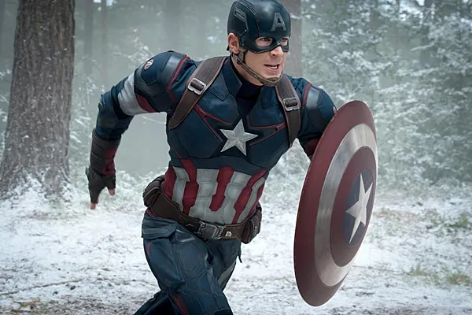
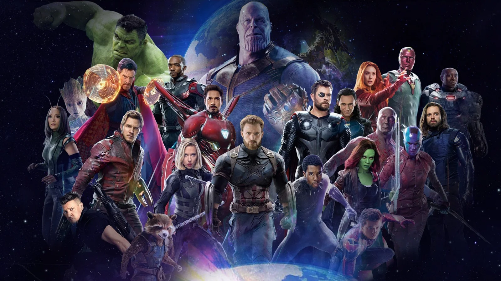

Christopher Robert Evans [1] was born on June 13, 1981 [2] in Boston , Massachusetts [3] and grew up in nearby Sudbury [4] . His mother, Lisa (née Capuano), is the artistic director of the Concord Youth Theatre, [5] [6] and his father, Bob, is a dentist . [7] The parents divorced in 1999
Evans has two sisters, Carly and Shanna, and a brother, also actor Scott Evans. He and his siblings were raised Catholic [9] . Their uncle, Mike Capuano, represented Massachusetts's 8th Congressional District . [10] Evans is of Irish descent, as well as Italian descent from his maternal grandfather
Evans first appeared in a short educational film called Biodiversity: Crazy for Life! in 1997 [17]
.
In September 2000, he moved to Los Angeles and lived in an apartment in Toluca Lake, where he met other young actors. That same year, Evans made his screen debut in the television film Beginners . [18] He then played the lead role in the television series The Opposite Sex, which ran for eight seasons . [19] In 2001, he starred in Not for Children , [20] a parody of teen films in which he plays a high school football player. [ 21] [22] [23] The film received mostly negative reviews [24] [25] , but grossed $38 million domestically and $28 million overseas for a worldwide box office of $66 million
Steve Rogers/Captain America .
In 2010, Evans signed a multi-film deal with Marvel Studios to play the Marvel comic book character Steve Rogers/Captain America . [60] [61] Evans initially turned down the role, but consulted Robert Downey Jr. , who advised him to accept the role. Thanks to Marvel's persistence, Evans agreed and then went to see a therapist. He noted that the character is fun to play and added, "I think Marvel is making a lot of great movies right now . " [62] The first film in the series was Captain America: The First Avenger."(2011). The story follows the protagonist as he transforms into the super-soldier Captain America and must stop the Red Skull from using the Tesseract as a power source for world domination. The film was a critical and commercial success, earning over $370 million at the worldwide box office . [63] In its positive review, The Sydney Morning Herald considered the film a "fresh twist on 20th-century history" and praised Evans' performance .
In 2018, he starred in the sequel " Avengers: Infinity War ", and in the spring of 2019 - in the fourth sequel " Avengers: Endgame " [95] . Both films were directed by Anthony and Joe Russo . They intended to film them simultaneously, but abandoned the idea due to difficulties. Evans admitted that he and Scarlett Johansson did not see the full script for Avengers: Infinity War before filming, saying: “We had to demand an actual paper script. We were given either pages or fragments on an iPad . It was difficult [96] .” While USA Today opined that Evans and co-star Chris Hemsworthwere stunning in the film [97] , a reviewer from Time magazine criticized the film for its lack of pacing and substance [98] . When Avengers: Endgame wrapped in October 2018, Evans admitted it was an emotional moment: “During the last month of filming, I went to work every day and was a little depressed and grateful and a lot nostalgic. By the last day I had already started crying [99] .” The fourth sequel grossed $2.7 billion worldwide [100] and the filmmakers were praised by Robbie Collin of The Telegraph for creating one of the most entertaining films in the Marvel Cinematic Universe
